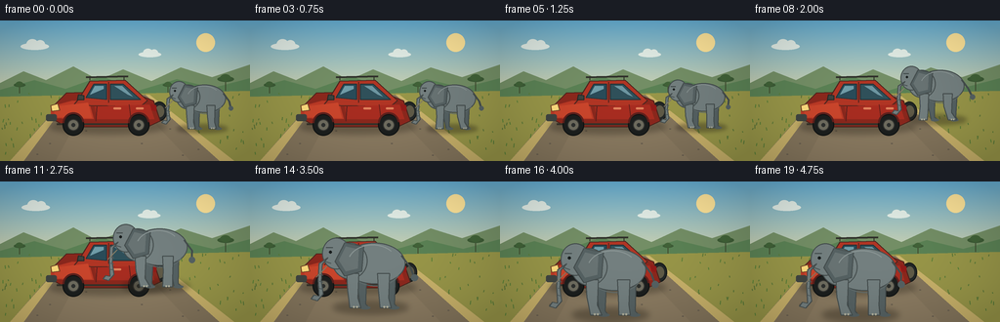
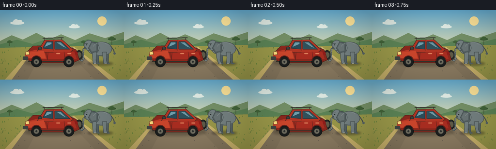

CODING AGENTS AS PIXEL WORLD MODELS
traex/GPT-5.6-Sol · dynamic_spatial_relationship_0067
点击播放 · 原生 RGB 像素
逐轮保存的候选
回放视频、检查图与代码变化。
每份候选均可单独播放。实际图片检查记录在下方工具轨迹中。
候选 01播放与检查图
点击播放 · 原生 RGB 像素


展开代码变化
--- 上一保存版本
+++ 本次保存版本
@@ -0,0 +1,204 @@
+from pathlib import Path
+import math
+import numpy as np
+from PIL import Image, ImageDraw, ImageFilter
+import artifact_io
+
+W,H,N = 256,144,20
+S=4
+rng=np.random.default_rng(67)
+
+def sc(v): return int(round(v*S))
+def pts(seq): return [(sc(x),sc(y)) for x,y in seq]
+
+def ellipse(d, box, fill, outline=None, width=1):
+ d.ellipse(tuple(sc(x) for x in box), fill=fill, outline=outline, width=sc(width) if outline else 1)
+def polygon(d, p, fill, outline=None, width=1):
+ d.polygon(pts(p), fill=fill)
+ if outline: d.line(pts(p+[p[0]]), fill=outline, width=sc(width), joint='curve')
+def line(d,p,fill,width=1): d.line(pts(p),fill=fill,width=sc(width),joint='curve')
+def rounded(d,box,r,fill,outline=None,width=1): d.rounded_rectangle(tuple(sc(x) for x in box),radius=sc(r),fill=fill,outline=outline,width=sc(width))
+
+def background(frame):
+ # painted late-afternoon sky gradient
+ arr=np.zeros((H*S,W*S,3),dtype=np.uint8)
+ top=np.array([102,174,211.]); bot=np.array([236,220,166.])
+ for y in range(H*S):
+ a=min(1,y/(92*S)); c=top*(1-a)+bot*a
+ arr[y,:,]=c.astype(np.uint8)
+ im=Image.fromarray(arr)
+ d=ImageDraw.Draw(im)
+ # sun and softly layered clouds
+ ellipse(d,(201,13,220,32),(255,229,154))
+ for cx,cy,sz in [(35+frame*.10,23,1),(153-frame*.07,32,.8)]:
+ col=(226,237,230)
+ ellipse(d,(cx-14*sz,cy,cx+15*sz,cy+7*sz),col)
+ ellipse(d,(cx-8*sz,cy-4*sz,cx+4*sz,cy+6*sz),col)
+ ellipse(d,(cx+1*sz,cy-3*sz,cx+11*sz,cy+6*sz),col)
+ # distant warm hills
+ polygon(d,[(0,64),(24,52),(47,61),(75,47),(101,61),(126,50),(155,62),(185,48),(217,58),(256,45),(256,92),(0,92)],(116,143,102))
+ polygon(d,[(0,71),(35,61),(67,70),(104,57),(141,72),(181,60),(218,69),(256,59),(256,94),(0,94)],(91,130,85))
+ # acacias in far field
+ for x,y,z in [(20,66,.5),(231,60,.7),(172,66,.45)]:
+ line(d,[(x,y+17*z),(x,y)],(65,77,48),max(1,int(2*z)))
+ ellipse(d,(x-12*z,y-4*z,x+12*z,y+4*z),(61,92,54))
+ ellipse(d,(x-8*z,y-7*z,x+7*z,y+3*z),(65,99,56))
+ # grass ground
+ polygon(d,[(0,78),(256,72),(256,144),(0,144)],(153,151,73))
+ # road, wide toward camera
+ polygon(d,[(67,79),(153,76),(240,144),(10,144)],(133,118,93))
+ polygon(d,[(68,79),(72,79),(24,144),(10,144)],(202,179,107))
+ polygon(d,[(149,76),(153,76),(240,144),(225,144)],(202,179,107))
+ # road soft tonal bands and stones
+ polygon(d,[(90,82),(134,80),(195,144),(57,144)],(140,124,98))
+ # faint center line behind subjects
+ polygon(d,[(109,79),(114,79),(117,91),(110,91)],(232,216,158))
+ # grass details deterministic
+ rr=np.random.default_rng(902)
+ for i in range(115):
+ x=float(rr.uniform(0,256)); y=float(rr.uniform(75,143))
+ # skip inner road area approximately
+ left=67-(y-79)*.85; right=153+(y-76)*1.28
+ if left < x < right: continue
+ h=float(rr.uniform(1.2,4.0)); sway=math.sin(frame*.4+i)*.6
+ line(d,[(x,y),(x+sway,y-h)],(91,116+int(i%17),57),1)
+ # scattered road pebbles
+ for x,y in [(51,126),(203,132),(174,111),(38,137),(145,126),(88,113),(187,138)]:
+ ellipse(d,(x-1,y-.4,x+1.2,y+.5),(104,94,79))
+ return im
+
+def draw_shadow(base, box, alpha=80, blur=4):
+ ov=Image.new('RGBA',base.size,(0,0,0,0)); dd=ImageDraw.Draw(ov)
+ dd.ellipse(tuple(sc(v) for v in box),fill=(45,38,26,alpha))
+ ov=ov.filter(ImageFilter.GaussianBlur(sc(blur)))
+ base.alpha_composite(ov)
+
+def draw_car(im,x=111,y=88):
+ # fixed compact red safari SUV, facing left; crisp 3/4 side view
+ draw_shadow(im,(50,101,170,116),95,3)
+ d=ImageDraw.Draw(im)
+ # rear spare tyre peeking at right
+ ellipse(d,(155,83,171,103),(34,39,39),(20,24,24),1)
+ ellipse(d,(159,87,168,99),(96,91,72))
+ # lower chassis
+ polygon(d,[(55,87),(68,74),(132,72),(157,82),(164,103),(151,109),(68,109),(52,100)],(140,40,29),(76,37,29),1)
+ # bonnet slopes toward front (left)
+ polygon(d,[(52,88),(74,82),(91,83),(96,101),(52,100)],(189,58,38))
+ # roof and cabin
+ polygon(d,[(81,80),(92,62),(128,61),(151,82),(144,88),(75,87)],(177,54,37),(75,38,31),1)
+ # red highlight panels
+ polygon(d,[(55,88),(90,84),(94,100),(56,99)],(204,70,44))
+ polygon(d,[(97,88),(153,86),(158,101),(99,101)],(169,45,33))
+ line(d,[(99,88),(98,103)],(92,34,29),1)
+ line(d,[(132,86),(134,102)],(102,34,28),1)
+ # windows
+ polygon(d,[(88,79),(96,65),(109,65),(109,81)],(42,76,89),(36,52,57),1)
+ polygon(d,[(113,65),(126,65),(144,81),(113,81)],(48,81,91),(36,52,57),1)
+ # sky reflection
+ polygon(d,[(92,76),(97,67),(106,67),(106,70)],(112,157,169))
+ polygon(d,[(117,67),(125,67),(136,78),(131,76)],(110,151,162))
+ # frame and door handles
+ line(d,[(111,63),(111,84)],(83,35,30),1)
+ rounded(d,(116,89,124,91),1,(225,130,92))
+ rounded(d,(139,89,147,91),1,(225,130,92))
+ # bumpers and lights: front is unmistakably on left
+ rounded(d,(47,96,58,103),2,(64,69,66))
+ polygon(d,[(52,87),(59,85),(61,92),(53,93)],(255,221,126),(112,67,37),1)
+ polygon(d,[(154,85),(160,87),(160,93),(155,92)],(146,28,25))
+ line(d,[(58,106),(151,106)],(55,51,43),2)
+ # roof rack
+ line(d,[(88,58),(131,57)],(49,49,43),2)
+ line(d,[(92,61),(92,57)],(49,49,43),1); line(d,[(127,61),(127,57)],(49,49,43),1)
+ # wheels, hubs
+ for cx in (75,142):
+ ellipse(d,(cx-11,96,cx+11,118),(28,31,30),(13,17,17),1)
+ ellipse(d,(cx-6,101,cx+6,113),(112,110,96),(52,53,50),1)
+ ellipse(d,(cx-2,105,cx+2,109),(46,49,47))
+ # wheel arches red accent
+ d.arc(tuple(sc(v) for v in (64,94,86,116)),180,355,fill=(94,32,28),width=sc(2))
+ d.arc(tuple(sc(v) for v in (131,94,153,116)),180,355,fill=(94,32,28),width=sc(2))
+ # windshield mirror
+ polygon(d,[(86,77),(80,76),(79,81),(86,81)],(60,67,63),(38,42,39),1)
+
+def transform(p,x,y,z): return [(x+a*z,y+b*z) for a,b in p]
+
+def draw_elephant(im,x,y,z,phase):
+ # profile elephant facing left; feet baseline y. Detailed readable silhouette.
+ draw_shadow(im,(x-38*z,y-7*z,x+38*z,y+6*z),100,3*z)
+ d=ImageDraw.Draw(im)
+ edge=(69,78,78); skin=(116,128,128); light=(139,150,149); dark=(86,98,99)
+ # far legs animated opposite pair
+ stride=math.sin(phase)*4.0
+ farlegs=[(-9,-stride*.45),(20,stride*.45)]
+ for lx,off in farlegs:
+ polygon(d,transform([(lx-5,-31),(lx+5,-31),(lx+4+off*.25,-4),(lx+8+off,0),(lx-1+off,0),(lx-4,-20)],x,y,z),dark,edge,1)
+ ellipse(d,(x+(lx-2+off)*z,y-2*z,x+(lx+9+off)*z,y+1.5*z),dark)
+ # body large rounded mass
+ ellipse(d,(x-28*z,y-66*z,x+35*z,y-24*z),skin,edge,1)
+ # back/head blending shoulder
+ ellipse(d,(x-39*z,y-66*z,x-3*z,y-29*z),skin,edge,1)
+ # belly shading
+ d.arc(tuple(sc(v) for v in (x-20*z,y-55*z,x+30*z,y-22*z)),20,150,fill=(96,108,108),width=max(1,sc(z)))
+ # near legs with obvious walk
+ nearlegs=[(-18,stride),(13,-stride)]
+ for lx,off in nearlegs:
+ poly=[(lx-6,-35),(lx+6,-35),(lx+5,-10),(lx+8+off,0),(lx-3+off,0),(lx-5,-18)]
+ polygon(d,transform(poly,x,y,z),skin,edge,1)
+ # toenail highlights
+ for q in range(2):
+ ellipse(d,(x+(lx+off+q*3)*z,y-2*z,x+(lx+off+q*3+2)*z,y),(181,180,160))
+ # forehead/head dome
+ ellipse(d,(x-49*z,y-71*z,x-20*z,y-39*z),skin,edge,1)
+ # ear (large african ear)
+ polygon(d,transform([(-26,-66),(-7,-62),(-9,-37),(-26,-32),(-36,-47)],x,y,z),dark,edge,1)
+ polygon(d,transform([(-25,-62),(-12,-59),(-13,-40),(-25,-37),(-32,-48)],x,y,z),(105,116,116))
+ # trunk curls down and subtly forward to left
+ trunk=[(-43,-51),(-49,-44),(-50,-27),(-48,-14),(-54,-7),(-60,-9),(-57,-13),(-52,-12),(-53,-28),(-52,-45)]
+ polygon(d,transform(trunk,x,y,z),skin,edge,1)
+ # trunk wrinkle lines
+ for yy in (-34,-27,-20): line(d,transform([(-52,yy),(-48,yy+1)],x,y,z),(81,92,92),1)
+ # tusk
+ polygon(d,transform([(-44,-42),(-55,-31),(-47,-39)],x,y,z),(238,224,180),(133,124,102),1)
+ # eye, brow and smile-like mouth
+ ellipse(d,(x-42*z,y-58*z,x-39*z,y-55*z),(24,29,29))
+ line(d,transform([(-45,-61),(-38,-61)],x,y,z),(66,76,76),1)
+ line(d,transform([(-46,-47),(-40,-45)],x,y,z),(72,82,82),1)
+ # tail with tuft
+ tailwave=math.sin(phase*.7)*3
+ line(d,transform([(31,-53),(40,-41),(42+tailwave,-31)],x,y,z),edge,2)
+ ellipse(d,(x+(39+tailwave)*z,y-34*z,x+(46+tailwave)*z,y-27*z),dark)
+ # back highlight
+ d.arc(tuple(sc(v) for v in (x-23*z,y-64*z,x+27*z,y-27*z)),200,320,fill=light,width=max(1,sc(z)))
+
+def smoothstep(v):
+ v=max(0,min(1,v)); return v*v*(3-2*v)
+
+def make_frame(i):
+ base=background(i).convert('RGBA')
+ # car stays parked throughout, anchoring the relationship
+ draw_car(base)
+ # Initial right-of position is held, then elephant arcs toward camera/in front.
+ if i<=4: u=0
+ elif i>=16: u=1
+ else: u=smoothstep((i-4)/12)
+ # quadratic Bezier: from screen-right/back to center-front, increasing scale reinforces depth
+ p0=np.array([207.,111.]); p1=np.array([185.,83.]); p2=np.array([113.,137.])
+ pos=(1-u)**2*p0+2*(1-u)*u*p1+u*u*p2
+ z=.69+(1.04-.69)*u
+ # feet at endpoint y 137, body overlaps/stands clearly in front of car
+ phase=i*1.35
+ draw_elephant(base,float(pos[0]),float(pos[1]),float(z),phase)
+ # subtle cinematic vignette
+ rgb=np.array(base.convert('RGB')).astype(np.float32)
+ yy,xx=np.mgrid[0:H*S,0:W*S]
+ dx=(xx-W*S/2)/(W*S/2); dy=(yy-H*S/2)/(H*S/2)
+ vig=np.clip(1-.105*(dx*dx+dy*dy),.82,1)[...,None]
+ rgb=np.clip(rgb*vig,0,255).astype(np.uint8)
+ out=Image.fromarray(rgb).resize((W,H),Image.Resampling.LANCZOS)
+ return np.asarray(out,dtype=np.uint8)
+
+def main():
+ frames=np.stack([make_frame(i) for i in range(N)],axis=0)
+ artifact_io.save(frames,Path(__file__).resolve().parent)
+
+if __name__=='__main__': main()
可观测工具轨迹
实际执行的命令与返回图片。
命令 1exit 0
/bin/bash -lc "cat prompt.txt && printf '\\n---RULES---\\n' && cat GENERATION_RULES.md && printf '\\n---SPEC---\\n' && cat task_spec.json"
命令 2exit 0
/bin/bash -lc "find . -maxdepth 2 -type f -printf '%p\\n' | sort | head -200 && printf '\\nTOOLS\\n' && command -v ffmpeg || true && command -v blender || true && command -v python3 || true"
命令 3exit 0
/bin/bash -lc 'cat artifact_io.py'
命令 4exit 1
/bin/bash -lc "cat > generate.py <<'PY'
from pathlib import Path
import math
import numpy as np
from PIL import Image, ImageDraw, ImageFilter
import artifact_io
W,H,N = 256,144,20
S=4
rng=np.random.default_rng(67)
def sc(v): return int(round(v*S))
def pts(seq): return [(sc(x),sc(y)) for x,y in seq]
def ellipse(d, box, fill, outline=None, width=1):
d.ellipse(tuple(sc(x) for x in box), fill=fill, outline=outline, width=sc(width) if outline else 1)
def polygon(d, p, fill, outline=None, width=1):
d.polygon(pts(p), fill=fill)
if outline: d.line(pts(p+[p[0]]), fill=outline, width=sc(width), joint='curve')
def line(d,p,fill,width=1): d.line(pts(p),fill=fill,width=sc(width),joint='curve')
def rounded(d,box,r,fill,outline=None,width=1): d.rounded_rectangle(tuple(sc(x) for x in box),radius=sc(r),fill=fill,outline=outline,width=sc(width))
def background(frame):
# painted late-afternoon sky gradient
arr=np.zeros((H*S,W*S,3),dtype=np.uint8)
top=np.array([102,174,211.]); bot=np.array([236,220,166.])
for y in range(H*S):
a=min(1,y/(92*S)); c=top*(1-a)+bot*a
arr[y,:,]=c.astype(np.uint8)
im=Image.fromarray(arr)
d=ImageDraw.Draw(im)
# sun and softly layered clouds
ellipse(d,(201,13,220,32),(255,229,154))
for cx,cy,sz in [(35+frame*.10,23,1),(153-frame*.07,32,.8)]:
col=(226,237,230)
ellipse(d,(cx-14*sz,cy,cx+15*sz,cy+7*sz),col)
ellipse(d,(cx-8*sz,cy-4*sz,cx+4*sz,cy+6*sz),col)
ellipse(d,(cx+1*sz,cy-3*sz,cx+11*sz,cy+6*sz),col)
# distant warm hills
polygon(d,[(0,64),(24,52),(47,61),(75,47),(101,61),(126,50),(155,62),(185,48),(217,58),(256,45),(256,92),(0,92)],(116,143,102))
polygon(d,[(0,71),(35,61),(67,70),(104,57),(141,72),(181,60),(218,69),(256,59),(256,94),(0,94)],(91,130,85))
# acacias in far field
for x,y,z in [(20,66,.5),(231,60,.7),(172,66,.45)]:
line(d,[(x,y+17*z),(x,y)],(65,77,48),max(1,int(2*z)))
ellipse(d,(x-12*z,y-4*z,x+12*z,y+4*z),(61,92,54))
ellipse(d,(x-8*z,y-7*z,x+7*z,y+3*z),(65,99,56))
# grass ground
polygon(d,[(0,78),(256,72),(256,144),(0,144)],(153,151,73))
# road, wide toward camera
polygon(d,[(67,79),(153,76),(240,144),(10,144)],(133,118,93))
polygon(d,[(68,79),(72,79),(24,144),(10,144)],(202,179,107))
polygon(d,[(149,76),(153,76),(240,144),(225,144)],(202,179,107))
# road soft tonal bands and stones
polygon(d,[(90,82),(134,80),(195,144),(57,144)],(140,124,98))
# faint center line behind subjects
polygon(d,[(109,79),(114,79),(117,91),(110,91)],(232,216,158))
# grass details deterministic
rr=np.random.default_rng(902)
for i in range(115):
x=float(rr.uniform(0,256)); y=float(rr.uniform(75,143))
# skip inner road area approximately
left=67-(y-79)*.85; right=153+(y-76)*1.28
if left < x < right: continue
h=float(rr.uniform(1.2,4.0)); sway=math.sin(frame*.4+i)*.6
line(d,[(x,y),(x+sway,y-h)],(91,116+int(i%17),57),1)
# scattered road pebbles
for x,y in [(51,126),(203,132),(174,111),(38,137),(145,126),(88,113),(187,138)]:
ellipse(d,(x-1,y-.4,x+1.2,y+.5),(104,94,79))
return im
def draw_shadow(base, box, alpha=80, blur=4):
ov=Image.new('RGBA',base.size,(0,0,0,0)); dd=ImageDraw.Draw(ov)
dd.ellipse(tuple(sc(v) for v in box),fill=(45,38,26,alpha))
ov=ov.filter(ImageFilter.GaussianBlur(sc(blur)))
base.alpha_composite(ov)
def draw_car(im,x=111,y=88):
# fixed compact red safari SUV, facing left; crisp 3/4 side view
draw_shadow(im,(50,101,170,116),95,3)
d=ImageDraw.Draw(im)
# rear spare tyre peeking at right
ellipse(d,(155,83,171,103),(34,39,39),(20,24,24),1)
ellipse(d,(159,87,168,99),(96,91,72))
# lower chassis
polygon(d,[(55,87),(68,74),(132,72),(157,82),(164,103),(151,109),(68,109),(52,100)],(140,40,29),(76,37,29),1)
# bonnet slopes toward front (left)
polygon(d,[(52,88),(74,82),(91,83),(96,101),(52,100)],(189,58,38))
# roof and cabin
polygon(d,[(81,80),(92,62),(128,61),(151,82),(144,88),(75,87)],(177,54,37),(75,38,31),1)
# red highlight panels
polygon(d,[(55,88),(90,84),(94,100),(56,99)],(204,70,44))
polygon(d,[(97,88),(153,86),(158,101),(99,101)],(169,45,33))
line(d,[(99,88),(98,103)],(92,34,29),1)
line(d,[(132,86),(134,102)],(102,34,28),1)
# windows
polygon(d,[(88,79),(96,65),(109,65),(109,81)],(42,76,89),(36,52,57),1)
polygon(d,[(113,65),(126,65),(144,81),(113,81)],(48,81,91),(36,52,57),1)
# sky reflection
polygon(d,[(92,76),(97,67),(106,67),(106,70)],(112,157,169))
polygon(d,[(117,67),(125,67),(136,78),(131,76)],(110,151,162))
# frame and door handles
line(d,[(111,63),(111,84)],(83,35,30),1)
rounded(d,(116,89,124,91),1,(225,130,92))
rounded(d,(139,89,147,91),1,(225,130,92))
# bumpers and lights: front is unmistakably on left
rounded(d,(47,96,58,103),2,(64,69,66))
polygon(d,[(52,87),(59,85),(61,92),(53,93)],(255,221,126),(112,67,37),1)
polygon(d,[(154,85),(160,87),(160,93),(155,92)],(146,28,25))
line(d,[(58,106),(151,106)],(55,51,43),2)
# roof rack
line(d,[(88,58),(131,57)],(49,49,43),2)
line(d,[(92,61),(92,57)],(49,49,43),1); line(d,[(127,61),(127,57)],(49,49,43),1)
# wheels, hubs
for cx in (75,142):
ellipse(d,(cx-11,96,cx+11,118),(28,31,30),(13,17,17),1)
ellipse(d,(cx-6,101,cx+6,113),(112,110,96),(52,53,50),1)
ellipse(d,(cx-2,105,cx+2,109),(46,49,47))
# wheel arches red accent
d.arc(tuple(sc(v) for v in (64,94,86,116)),180,355,fill=(94,32,28),width=sc(2))
d.arc(tuple(sc(v) for v in (131,94,153,116)),180,355,fill=(94,32,28),width=sc(2))
# windshield mirror
polygon(d,[(86,77),(80,76),(79,81),(86,81)],(60,67,63),(38,42,39),1)
def transform(p,x,y,z): return [(x+a*z,y+b*z) for a,b in p]
def draw_elephant(im,x,y,z,phase):
# profile elephant facing left; feet baseline y. Detailed readable silhouette.
draw_shadow(im,(x-38*z,y-7*z,x+38*z,y+6*z),100,3*z)
d=ImageDraw.Draw(im)
edge=(69,78,78); skin=(116,128,128); light=(139,150,149); dark=(86,98,99)
# far legs animated opposite pair
stride=math.sin(phase)*4.0
farlegs=[(-9,-stride*.45),(20,stride*.45)]
for lx,off in farlegs:
polygon(d,transform([(lx-5,-31),(lx+5,-31),(lx+4+off*.25,-4),(lx+8+off,0),(lx-1+off,0),(lx-4,-20)],x,y,z),dark,edge,1)
ellipse(d,(x+(lx-2+off)*z,y-2*z,x+(lx+9+off)*z,y+1.5*z),dark)
# body large rounded mass
ellipse(d,(x-28*z,y-66*z,x+35*z,y-24*z),skin,edge,1)
# back/head blending shoulder
ellipse(d,(x-39*z,y-66*z,x-3*z,y-29*z),skin,edge,1)
# belly shading
d.arc(tuple(sc(v) for v in (x-20*z,y-55*z,x+30*z,y-22*z)),20,150,fill=(96,108,108),width=max(1,sc(z)))
# near legs with obvious walk
nearlegs=[(-18,stride),(13,-stride)]
for lx,off in nearlegs:
poly=[(lx-6,-35),(lx+6,-35),(lx+5,-10),(lx+8+off,0),(lx-3+off,0),(lx-5,-18)]
polygon(d,transform(poly,x,y,z),skin,edge,1)
# toenail highlights
for q in range(2):
ellipse(d,(x+(lx+off+q*3)*z,y-2*z,x+(lx+off+q*3+2)*z,y*z),(181,180,160))
# forehead/head dome
ellipse(d,(x-49*z,y-71*z,x-20*z,y-39*z),skin,edge,1)
# ear (large african ear)
polygon(d,transform([(-26,-66),(-7,-62),(-9,-37),(-26,-32),(-36,-47)],x,y,z),dark,edge,1)
polygon(d,transform([(-25,-62),(-12,-59),(-13,-40),(-25,-37),(-32,-48)],x,y,z),(105,116,116))
# trunk curls down and subtly forward to left
trunk=[(-43,-51),(-49,-44),(-50,-27),(-48,-14),(-54,-7),(-60,-9),(-57,-13),(-52,-12),(-53,-28),(-52,-45)]
polygon(d,transform(trunk,x,y,z),skin,edge,1)
# trunk wrinkle lines
for yy in (-34,-27,-20): line(d,transform([(-52,yy),(-48,yy+1)],x,y,z),(81,92,92),1)
# tusk
polygon(d,transform([(-44,-42),(-55,-31),(-47,-39)],x,y,z),(238,224,180),(133,124,102),1)
# eye, brow and smile-like mouth
ellipse(d,(x-42*z,y-58*z,x-39*z,y-55*z),(24,29,29))
line(d,transform([(-45,-61),(-38,-61)],x,y,z),(66,76,76),1)
line(d,transform([(-46,-47),(-40,-45)],x,y,z),(72,82,82),1)
# tail with tuft
tailwave=math.sin(phase*.7)*3
line(d,transform([(31,-53),(40,-41),(42+tailwave,-31)],x,y,z),edge,2)
ellipse(d,(x+(39+tailwave)*z,y-34*z,x+(46+tailwave)*z,y-27*z),dark)
# back highlight
d.arc(tuple(sc(v) for v in (x-23*z,y-64*z,x+27*z,y-27*z)),200,320,fill=light,width=max(1,sc(z)))
def smoothstep(v):
v=max(0,min(1,v)); return v*v*(3-2*v)
def make_frame(i):
base=background(i).convert('RGBA')
# car stays parked throughout, anchoring the relationship
draw_car(base)
# Initial right-of position is held, then elephant arcs toward camera/in front.
if i<=4: u=0
elif i>=16: u=1
else: u=smoothstep((i-4)/12)
# quadratic Bezier: from screen-right/back to center-front, increasing scale reinforces depth
p0=np.array([207.,111.]); p1=np.array([185.,83.]); p2=np.array([113.,137.])
pos=(1-u)**2*p0+2*(1-u)*u*p1+u*u*p2
z=.69+(1.04-.69)*u
# feet at endpoint y 137, body overlaps/stands clearly in front of car
phase=i*1.35
draw_elephant(base,float(pos[0]),float(pos[1]),float(z),phase)
# subtle cinematic vignette
rgb=np.array(base.convert('RGB')).astype(np.float32)
yy,xx=np.mgrid[0:H*S,0:W*S]
dx=(xx-W*S/2)/(W*S/2); dy=(yy-H*S/2)/(H*S/2)
vig=np.clip(1-.105*(dx*dx+dy*dy),.82,1)[...,None]
rgb=np.clip(rgb*vig,0,255).astype(np.uint8)
out=Image.fromarray(rgb).resize((W,H),Image.Resampling.LANCZOS)
return np.asarray(out,dtype=np.uint8)
def main():
frames=np.stack([make_frame(i) for i in range(N)],axis=0)
artifact_io.save(frames,Path(__file__).resolve().parent)
if __name__=='__main__': main()
PY
python3 generate.py
python3 - <<'PY'
from PIL import Image
im=Image.open('inspection.png'); print(im.size)
PY"命令 5exit 0
/bin/bash -lc "python3 - <<'PY'
p='generate.py'
s=open(p).read().replace(\"y-2*z,x+(lx+off+q*3+2)*z,y*z)\",\"y-2*z,x+(lx+off+q*3+2)*z,y)\")
open(p,'w').write(s)
PY
python3 generate.py
python3 - <<'PY'
import numpy as np
from PIL import Image
x=np.load('pixels.npz')['pixels']; print('packed',x.shape,x.dtype,'frames',len(list(__import__('pathlib').Path('frames').glob('*.png'))))
for i in [0,4,8,12,16,19]:
a=np.asarray(Image.open(f'frames/{i:02}.png')); print(i,a.shape,a.mean(axis=(0,1)).round(1),len(np.unique(a.reshape(-1,3),axis=0)))
print('inspection',Image.open('inspection.png').size,'html',__import__('os').path.getsize('index.html'))
PY"保存候选 1 份；完成命令 5 次；可验证图片返回 0 张。原始 API 响应与完整日志保留在本地。